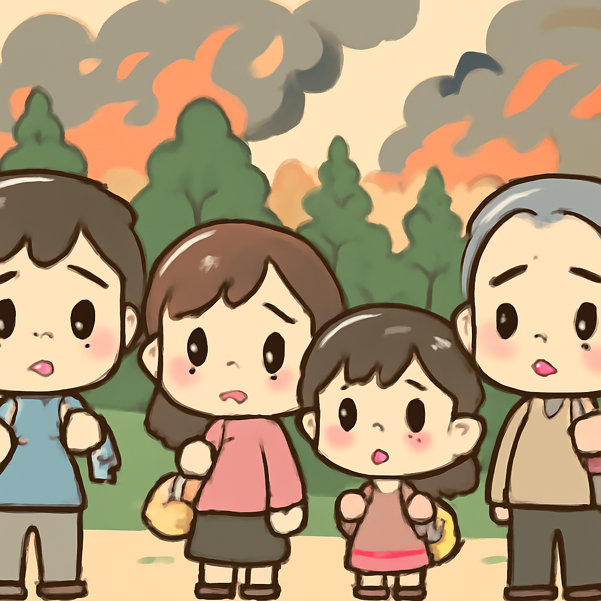

其一 · 烏克蘭 · 烏克蘭無人機襲擊俄國致13死
烏克蘭無人機攻擊俄國，造成13人死亡。
在烏克蘭的無人機攻擊中，俄國塔塔爾斯坦地區發生了悲劇，至少13人喪生，75人受傷。這是自全面入侵以來，俄國面對的最致命無人機襲擊之一，無疑加劇了兩國間的緊張局勢。這也讓人懷疑，俄國的防空系統是否真的有效，還是只是個展示品。
🔗 原始新聞 ↗
2026-08-11 · 以古觀今，以笑抗愁
烏克蘭無人機攻擊俄國，造成13人死亡。
在烏克蘭的無人機攻擊中，俄國塔塔爾斯坦地區發生了悲劇，至少13人喪生，75人受傷。這是自全面入侵以來，俄國面對的最致命無人機襲擊之一，無疑加劇了兩國間的緊張局勢。這也讓人懷疑，俄國的防空系統是否真的有效，還是只是個展示品。
🔗 原始新聞 ↗
哥倫比亞發生7.4級地震，造成逾百人死亡。
在哥倫比亞，7.4級地震重創了包括波哥大和卡利在內的主要城市，造成至少111人死亡，許多建築物損毀。這場地震不僅帶來了巨大的破壞，更讓當地居民面臨失去家園的風險。希望救援工作能夠順利進行，讓人們早日重建生活。
🔗 原始新聞 ↗
加拿大野火肆虐，超過12,000人被迫撤離。

在加拿大美麗的奧卡納根地區，野火蔓延，已經有超過12,000人被迫撤離，部分家園不幸被焚燒。這場災難讓人們不禁擔心，面對氣候變遷，我們的環境真的還能承受多久？希望大家能平安度過這次危機，未來也能更加重視環保。
🔗 原始新聞 ↗
內塔尼亞胡拒絕特朗普的15點加沙計劃，選舉前景不明。
以色列總理內塔尼亞胡對特朗普提出的15點加沙和平計劃表示拒絕，這並不意外，因為他正面臨即將到來的選舉壓力。特朗普的團隊似乎對此不以為然，認為這只是選舉宣傳的一部分。這場政治角力讓人懷疑，未來的和平進程究竟會走向何方。
🔗 原始新聞 ↗
全球海洋七月創下新高溫，熱浪影響深遠。
根據最新報告，全球海洋在七月創下新高溫，這主要受到厄爾尼諾氣候現象的影響，西歐地區的野火也在肆虐。這不僅是個氣候數據，更是對我們生活方式的警告，未來的環境變遷將會對人類的影響更深遠。希望大家能多多關注氣候問題，讓地球不再燒。
🔗 原始新聞 ↗